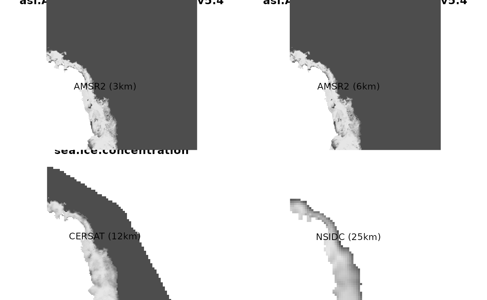

Sea ice concentration describes the relative amount of area covered by ice. In raadtools there are different resolutions available and each covers the entire ice-affected area of the Southern Ocean. Each product provides a percentage of sea ice concentration, a value from 0 to 100.
The products are
The raadtools functions ‘readice()’, ‘read_cersat_ice()’, ‘read_amsr2_ice()’, and ‘read_amsr2_3k_ice()’ read these four cases respectively as a function of date in R.
Each read function has a matching get files function that it uses.
| product | read | files |
|---|---|---|
| NSIDC | readice() |
icefiles() |
| CERSAT | read_cersat_ice() |
raadfiles::cersat_daily_files() |
| AMSR-E | read_amsre_ice() |
raadfiles::amsre_daily_files() |
| AMSR2 | read_amsr2_ice() |
raadfiles::amsr2_daily_files() |
| AMSR2 (3km) | read_amsr2_3k_ice() |
raadfiles::amsr2_3k_daily_files() |
The documentation for each function is available in R itself or on this site: http://australianantarcticdivision.github.io/raadtools/reference/index.html
Most of the file-getter function are in the package raadfiles, this reflects the historical development of the raadtools package, early habits were established and then the raadfiles package was spun off to manage that part of the process.
Not every day is available in every case. Each function when given a date (or date-time) value will find the nearest available data in time within a certain tolerance. This means that sometimes we would obtain the same layer for slightly different inputs (i.e. 2 consecutive days may not be differentiated). This is a convenience for casual usage. For more rigorous use we should obtain each set of files directly and use the available dates explicitly.
One function readice() has a special argument hemisphere = "south", which clearly defaults to the Antarctic. This argument is shared with the paired icefiles() function, so we can explicitly visit the files in use more directly as well. The matching northern hemisphere data is only available for NSIDC 25km, and each day that exists does have an exact counterpart.
In raadtools each product can be quite different in terms of the exact meaning and usage of the data provided, generally we leave these as-is so care must be taken not to assume things in common (necessarily). For example, in some cases a special missing value is provided, separate from zero - but generally this is product-specific and data may not be masked completely in terms of land vs. sea (or ice shelf).
The best way to explore a data set is to read some, plot it, map it against your own data, find others who have used it. The raadtools authors aren’t necessarily experts with every data set but will be happy to help explore the data for different purposes.
These can be regridded or aggregated temporarily in any way that’s required using spatial tools in R.
What follows is a quick example of sea ice concentration around Mawson station comparing these products on 2021-03-24, generated with a few lines of R code.
library(raadtools)
#> Loading required package: raster
#> Loading required package: sp
#> global option 'raadfiles.data.roots' set:
#> '/rdsi/PRIVATE/raad/data
#> /rdsi/PRIVATE/raad/data_local
#> /rdsi/PRIVATE/raad/data_staging
#> /rdsi/PRIVATE/raad/data_deprecated
#> /rdsi/PUBLIC/raad/data '
#> Uploading raad file cache as at 2022-05-25 23:06:45 (1147016 files listed)
ice <- readice()
pt <- cbind(61 + 25.7/60, -(66+1.4/60))
xy <- rgdal::project(pt, projection(ice))
buf <- 640000
ex <- raster::extent(xy[,1] + c(-0.5, 1) * 1 * buf * 1.852,
xy[,2] + c(-0.5, 1) * 1 * buf * 1.852)
x <- NULL
par(mfrow = c(2, 2), mar = rep(0, 4))
date <- "2021-03-24"
#ex <- NULL
x1 <- read_amsr2_3k_ice(date, xylim = ex)
x2 <- read_amsr2_ice(date, xylim = ex)
#> Raad file cache is up to date as at 2022-05-25 23:06:45 (1147016 files listed)
x3 <- crop(read_cersat_ice(date), ex)
x4 <- readice(date, xylim = ex)
l <- c(2413821, 1419113)
image(x1, col = grey.colors(100), axes = F, xlab = "", ylab = "", asp = 1); text(l[1], l[2], lab = "AMSR2 (3km)")
image(x2, col = grey.colors(100), axes = F, xlab = "", ylab = "", asp = 1); text(l[1], l[2], lab = "AMSR2 (6km)")
image(x3, col = grey.colors(100), axes = F, xlab = "", ylab = "", asp = 1); text(l[1], l[2], lab = "CERSAT (12km)")
image(x4, col = grey.colors(100), axes = F, xlab = "", ylab = "", asp = 1); text(l[1], l[2], lab = "NSIDC (25km)")